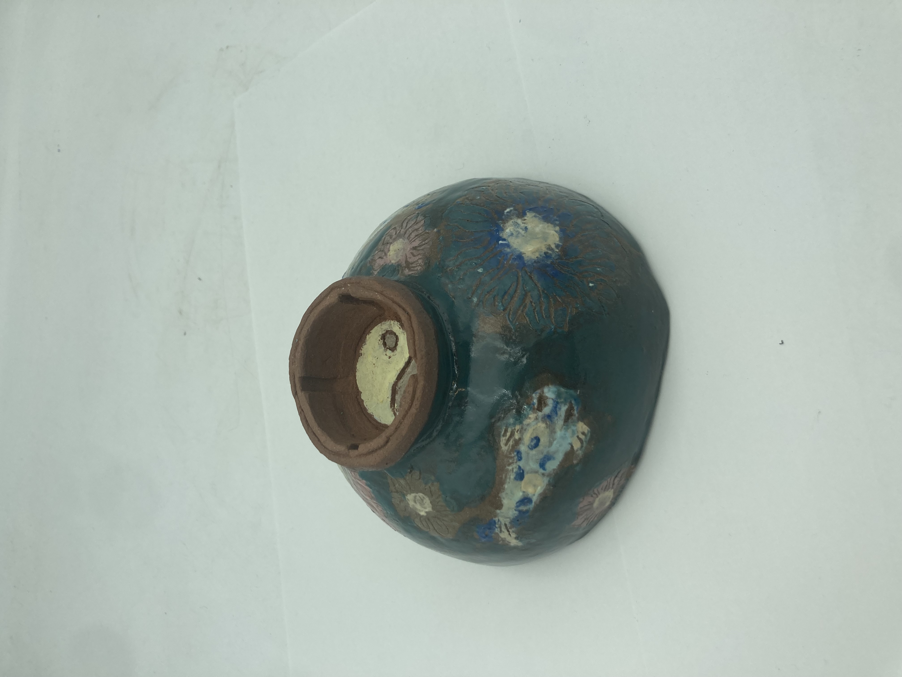
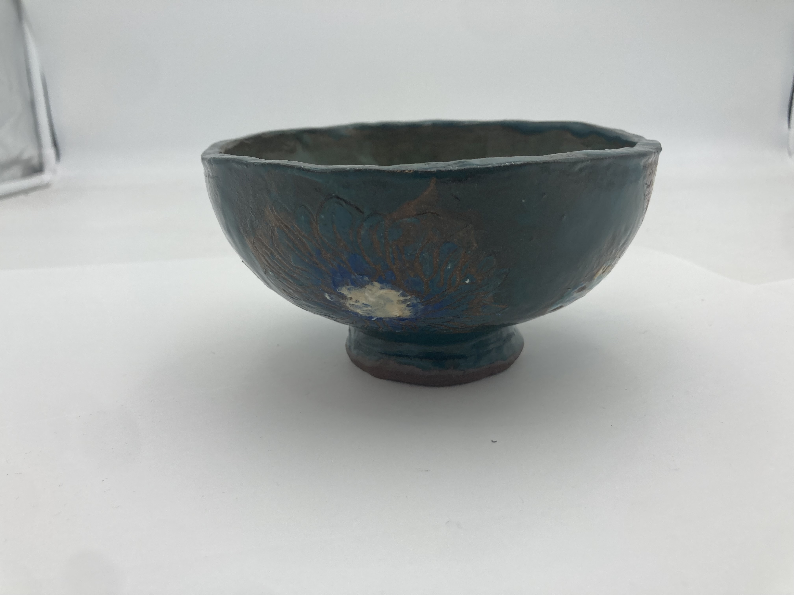
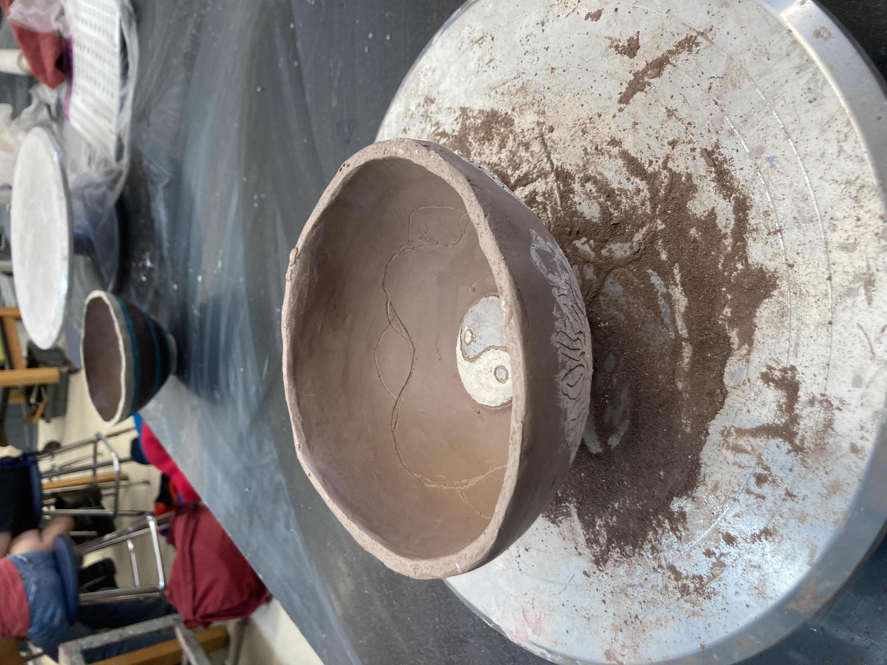
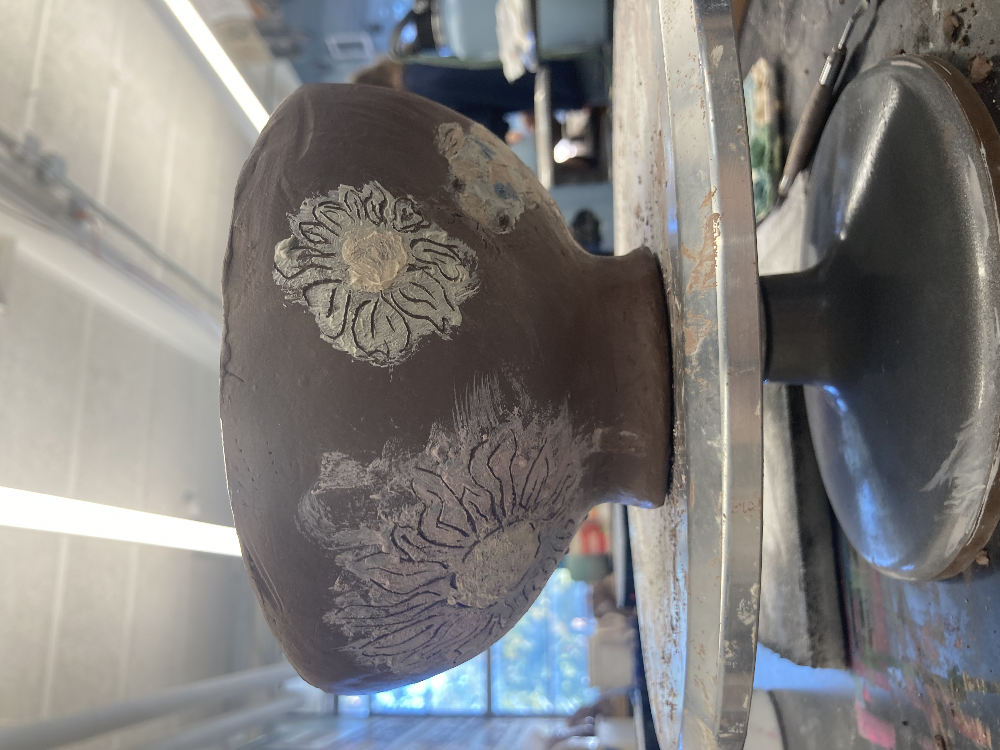
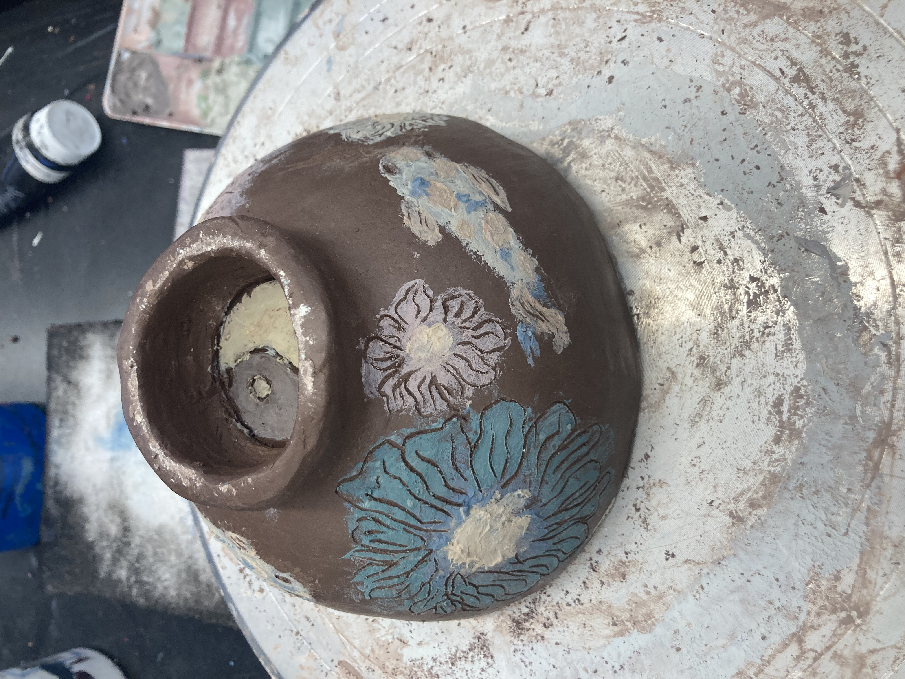
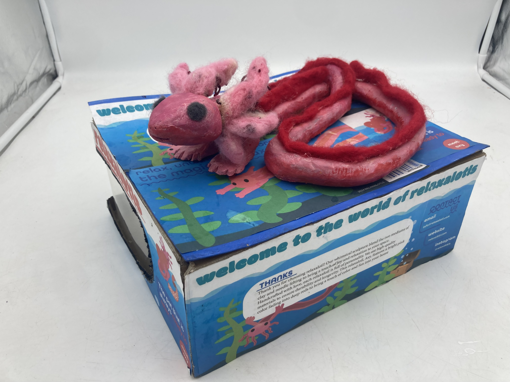
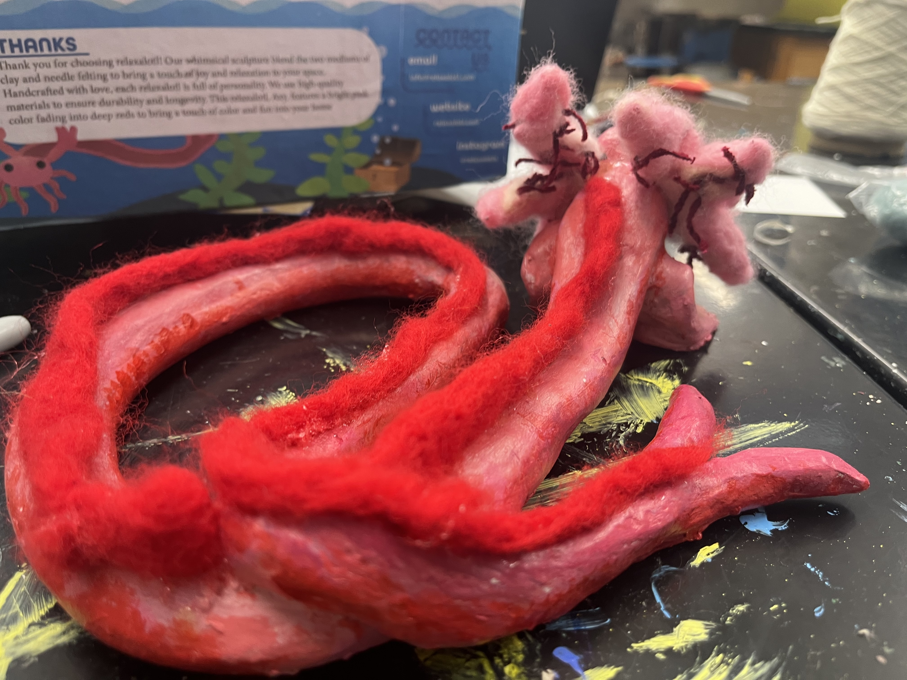
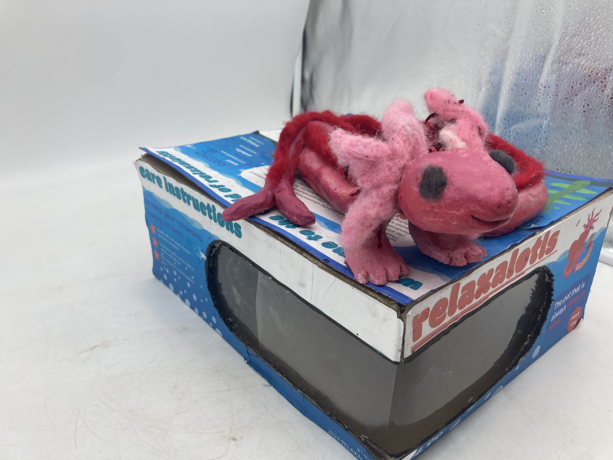
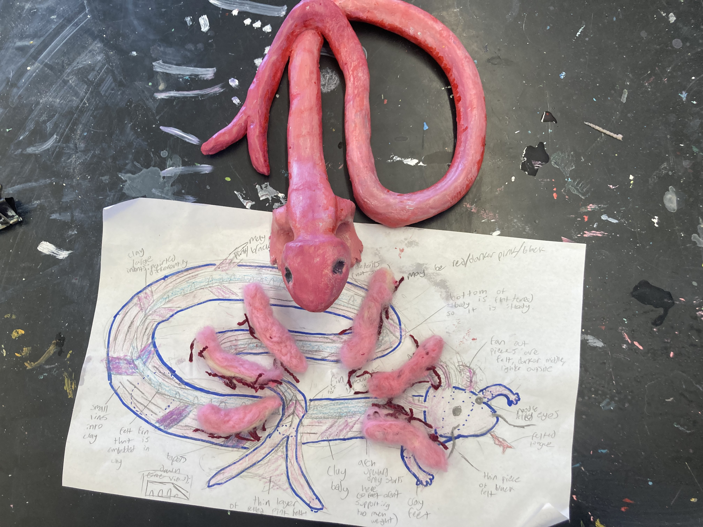

Made as part of the Austin Empty Bowl Project, which connects art students with hunger relief. The bowls are sold, and the funds go to people who actually need food. The idea is that when you eat from the bowl, you're meant to think about those who don't have one. It's a good prompt to make something powerful.
The bowl is hand-sculpted from red clay with a fancy footed circular base. I carved koi fish and flowers directly into the exterior walls, then painted glaze with white, pink, cyan, and yellow on the flowers and koi details before glazing the rest of the body blue. A yin-yang sits on the exterior base, mirrored by one carved into the interior floor. The koi circle in one continuous loop around the outside, which mirrors the yin-yang at the bottom. Koi are determinately looping through the unique pond of life.
The glazes overlapped in places during firing and blurred the outlines of some of the koi. It made it look messier than I'd planned. But looking at it now, the imperfection feels right for an object designed around the idea that you keep seeking peace, swimming with determination, even when life gets messy and rough. A bowl made for people going through a difficult time is more reflective when it doesn't look perfect.
exterior base — yin-yang + flower glaze

side-angle — koi and flowers wrapping the walls
upright — finished blue glaze, hand-formed rimThe raw clay version — before any blue glaze was applied. The carved flowers and koi are clear here, and the koi interior outlines on the base floor are much more legible. The glaze unified and enriched the surface but also bled into some of the fine lines during firing.

interior — koi and yin-yang before glaze
side view in progress — classroom wheel
exterior base — carvings before glaze"The glazes overlapped and smudged and blurred the outlines. But at least it became a better metaphor because of it."
Made around the same time, the Relaxalotl completely contrasts the bowl. Where the bowl is all about simplicity, tranquility, and determination, the Relaxalotl is all about brightness and joy. The Relaxalotl is a fun fantasy creature, a long, snaking axolotl with a mermaid-style tail, fins running down its body, and the signature axolotl head tentacles. Bright pink clay body, deep red fins done in needle felting, pink felted tentacles, large black eyes.
To learn a variety of techniques and be able to prevent another glaze mishap like with the bowl, the Relaxalotl used acrylic paint and incorporated needle felting for the fins, gills, and tentacles.

relaxalotl — finished, front view on its box
relaxalotl — back, showing the full tail loop
in progress — needle-felted fins going on
clay body over design sketch — before felt
exterior base — yin-yang